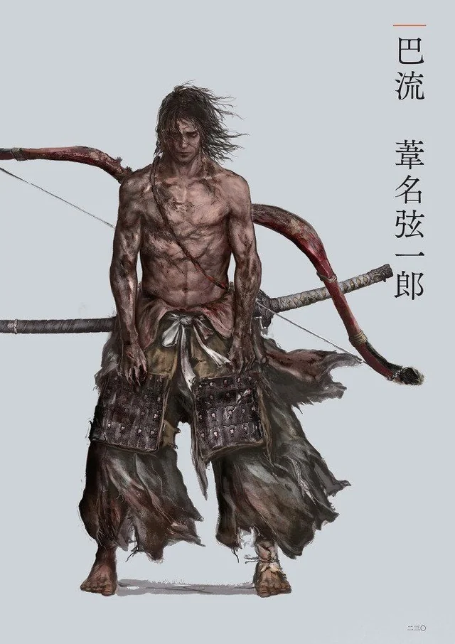

"Heresy, you say? If it is for the sake of preserving Ashina, I will seize any manner of heretical strength, I will endure any burden. Behold"

| Serving under Lord Genichiro Ashina is to witness the true fire of Ashina's spirit. He walks the same bloody ground as us, not from the safety of a fortress, but shoulder-to-shoulder with his soldiers. He is a man defined by action, not just noble birth, and when the enemies of Ashina breach our walls, it is he who meets them first. Others might speak of tradition or strategy, but Lord Genichiro speaks with the cold, sharp truth of the steel he wields. He is driven by a singular, fierce purpose: the survival of Ashina, and he will pay any price—personal or otherwise—to ensure it. To fight for him is not just duty; it's to be swept up in a crusade led by a warrior who demands the absolute best, because he gives nothing less himself. He may be harsh, but in this brutal world, his relentless will is the only thing standing between our homes and ruin. |
| Benefits | About Lord Genichiro |
|---|---|
|
|
| Lightning of Tomoe | |
|---|---|
 |
To behold the Lightning of Tomoe is to witness desperation overriding honor, a terrifying spectacle only a few have survived to recount. When the heir to Ashina casts aside his armorand summons the furious tempest,it is a clear sign that Genichiro has wholly abandoned the Way of the Swordfor a forgotten, vile power. The bolts that crackle around his bladeare not the clean, natural strikes of a storm, but the chaotic, raw electricity wielded by the exiled figure, Tomoe.The terrifying thing is not merely the force of the strike,which can instantly vaporize a man,but the fact that the lightning defies the traditional rules of combat;it is an attack launched from the heavens,a desperate prayer answered by a demonic force. Any warrior facing it knowsthat merely blocking or deflecting is insufficient;only by enduring the pain, absorbing the surge into one's own body,and returning the wrath of the heavens upon the castercan the corruption of Tomoe be purged, if only temporarily, from the battlefield. |
Learn More About Genichiro Ashina
Learn More About the Way of Tomoe